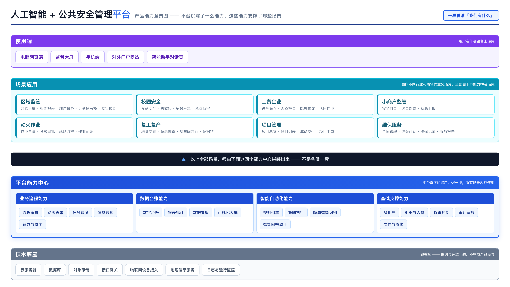
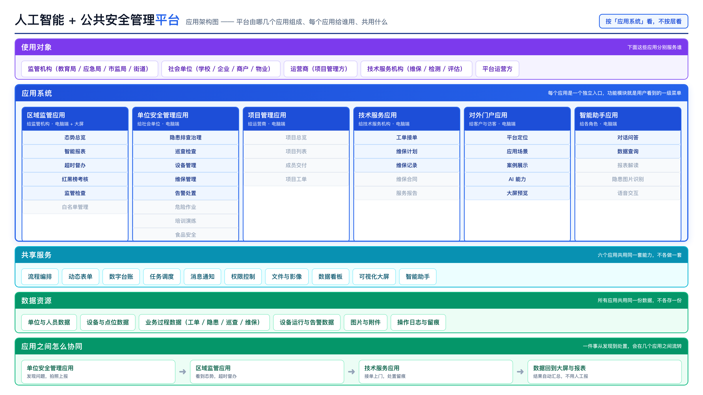
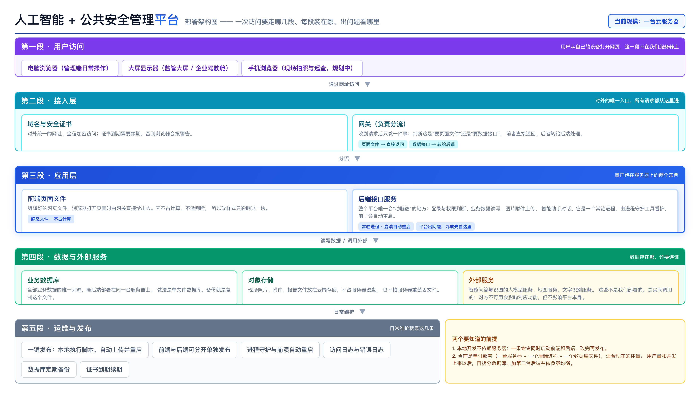
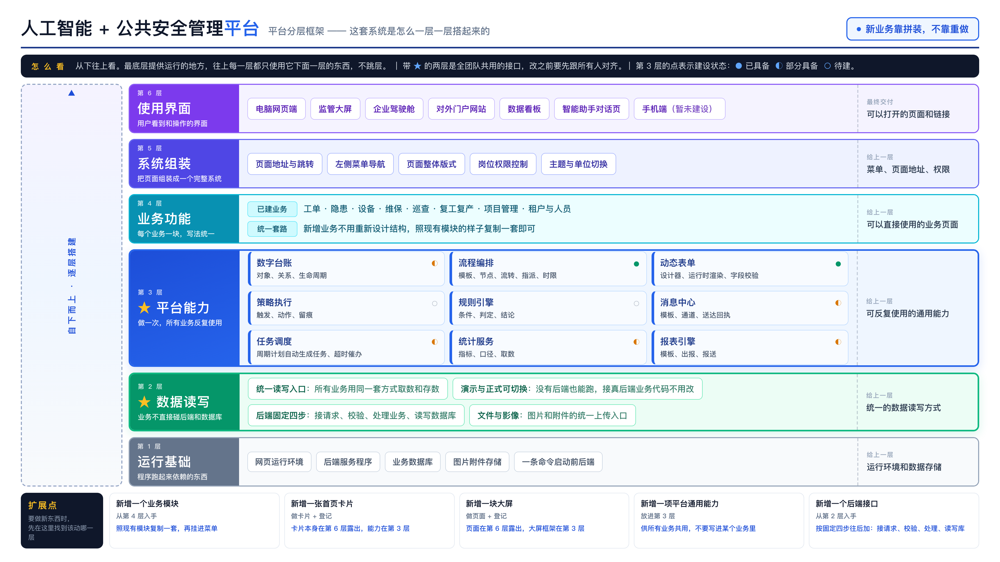

| 图 | 回答什么问题 | 给谁看 | 典型场合 |
|---|---|---|---|
| 图一 · 产品能力全景图 | 平台有什么能力、能支撑哪些场景 | 客户、领导、售前 | 对外介绍、售前材料、领导汇报第一页 —— 「一屏看清我们有什么」 |
| 图二 · 应用架构图 | 平台由哪几个应用组成、分别给谁用、共用什么 | 客户、产品、项目管理 | 讲产品结构、划功能边界、讨论「这个需求该放进哪个应用」 |
| 图三 · 部署架构图 | 装在哪里、请求怎么走、出问题看哪里 | 运维、客户技术对接 | 交付部署、故障定位、安全与运维评审 |
| 图四 · 分层架构图 | 系统怎么一层层搭起来、新功能该写哪层 | 研发 | 新人上手、代码评审、判断「这事该动哪一层」 |

fig1-panorama.html ｜ 导出：node docs/architecture/render.mjs fig1
fig2-application.html ｜ 导出：node docs/architecture/render.mjs fig2
fig3-deployment.html ｜ 导出：node docs/architecture/render.mjs fig3
platform-dev-architecture.html ｜ 导出：node docs/architecture/render.mjs fig4